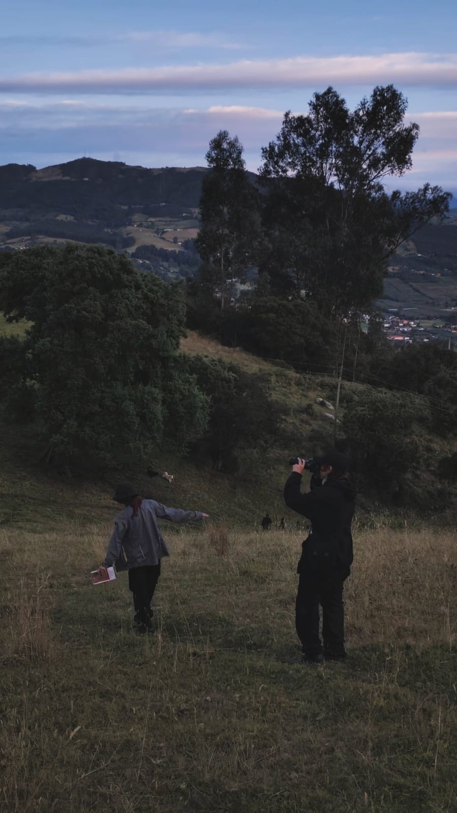

Esto es con todo mi amor y para que veas que si te amo mas ^^

Eres el amor de mi vida, realmente te amo con todo mi corazon y cada dia te amo mas y mas ^^
asi que me niego a perder
Yo te amo  más mi vida hermosa